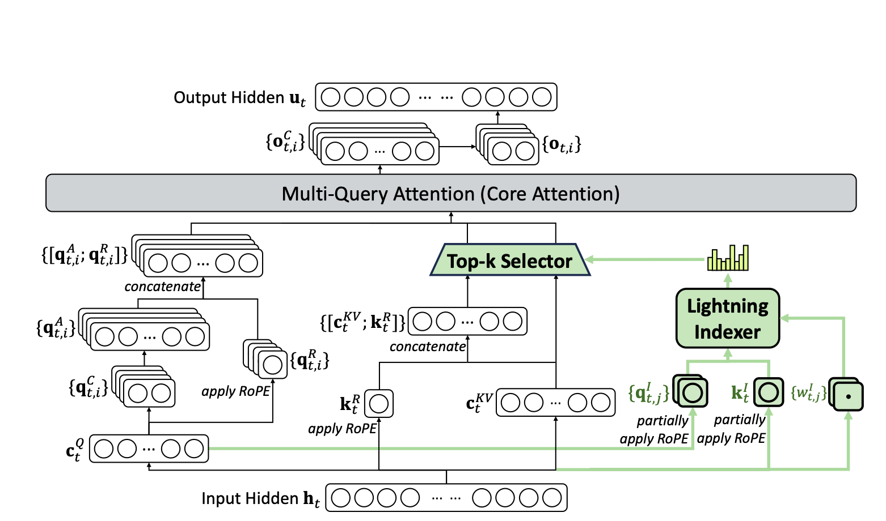

NPU 融合算子适配
torchtitan_npu 在 torchtitan_npu/converters/kernels 下定义了多个 torchtitan ModelConverter 。在启动模型训练任务时，它们会根据用户配置，自动将模型中的原始模块替换为基于 NPU 融合算子的实现，从而实现模型在 NPU 平台上的亲和适配。
如何配置
所有融合算子均通过在训练配置 TOML 文件 （例如 torchtitan_npu/models/deepseek_v32/train_configs/deepseek_v32_671b_debug.toml，或实际启动训练时 --job.config_file 所指向的路径）的 [model] 节中的 converters 列表中添加对应的配置项来启用。
示例：
[model]
name = "deepseek_v32"
flavor = "debugmodel"
hf_assets_path = "./assets/hf/DeepSeek-V3.2"
converters = ["npu_dsa", "npu_rms_norm", "npu_permute", "npu_gmm", "npu_expert_parallel"]
当前版本支持以下 ModelConverters ，前往对应章节查看功能介绍及启用方式： - DSA - GMM - Permute - RMSNorm - Rope - NEP
关于本仓库适配的各融合算子的详细说明，前往开发者文档。
DSA (DeepSeek Sparse Attention)

DSA 是DeepSeek-V3.2中引入的一种特殊注意力机制，主要由图中的两个模块构成：Lightning Indexer 筛选出少量高价值token的索引；这些索引被用于高效的 稀疏 Attention 计算 (图中 Multi-Query Attention部分)。
针对 DeepSeek V3.2 模型的 Attention 模块，将以上两种核心组件替换为对应的 NPU 融合算子。具体对应关系如下：
| DeepSeek V3.2 Attention 组件 | NPU融合算子 |
|---|---|
| Lightning Indexer 前向计算 | npu_lightning_indexer |
| Lightning Indexer 反向计算（梯度 + Loss） | npu_sparse_lightning_indexer_grad_kl_loss |
| 稀疏注意力计算 | npu_sparse_flash_attention |
配置示例：
[model]
converters = [... "npu_dsa", ...] # 添加 `npu_dsa` 配置项
ModelConverter 源码路径： torchtitan_npu/converters/kernels/dsa.py \
相关 NPU 融合算子开发者文档： npu_lightning_indexer npu_sparse_lightning_indexer_grad_kl_loss npu_sparse_flash_attention
GMM（Grouped MatMul）
在 MoE 模块中，每个专家执行前馈网络（FFN）运算：如 Swiglu FFN：输入先经过升维变换 w1，再通过激活函数，最后经过降维变换 w2 得到输出。
由于各专家执行结构相同的矩阵乘法，为了将同类矩阵运算合并为一次算子调用，提升计算效率，本ModelConverter 引入分组矩阵乘法（GMM）算子 npu_grouped_matmul。该算子接收 Permute 模块输出的重排后 token 及对应的专家索引，在一次调用中并行计算所有专家的同一线性层，如所有专家的 w1。
配置示例：
[model]
converters = [... "npu_gmm", ...] # 添加 `npu_gmm` 配置项
ModelConverter 源码路径： torchtitan_npu/converters/kernels/gmm.py \
相关 NPU 融合算子开发者文档： npu_grouped_matmul
Permute
MoE 前向计算中，为了利用 GMM 提升计算效率，token 需要根据 MoE Router 为每个 token 分配的专家，以特定顺序重排，输出重排列后的 token 及其对应的专家索引；计算完成后，再将结果恢复至原始 token 顺序。
本 ModelConverter 将“重排”和“恢复”操作替换为基于 npu_moe_token_permute 和 npu_moe_token_unpermute 算子的实现。
配置示例：
[model]
converters = [... "npu_permute", ...] # 添加 `npu_permute` 配置项
ModelConverter 源码路径： torchtitan_npu/converters/kernels/permute.py
RMSNorm
RMSNorm 通过计算输入张量每个样本的平方均值的平方根来稳定深层网络的训练。
本 ModelConverter 将模型中的 RmsNorm 操作替换为基于 npu_rms_norm 融合算子的实现。
TOML 配置项：npu_rms_norm\
配置示例：
[model]
converters = [... "npu_rms_norm", ...] # 添加 `npu_rms_norm` 配置项
ModelConverter 源码路径： torchtitan_npu/converters/kernels/rms_norm.py \
相关 NPU 融合算子开发者文档： npu_grouped_matmul
RoPE
RoPE 将 token 位置相关的旋转矩阵应用于自注意力机制中的 Query 和 Key 向量，使每对 token 之间的相对位置信息在 Attention 计算中自然包含 Query 和 Key 的乘积。
在模型实现中，通常预先生成每个位置的旋转角度，在 Attention 计算时，即时对 Query 和 Key 进行旋转变换。本 ModelConverter 将这一旋转变换操作替换为基于 npu_rotary_mul 融合算子的实现。
配置示例：
[model]
converters = [... "npu_rope", ...] # 添加 `npu_rope` 配置项
ModelConverter 源码路径： torchtitan_npu/converters/kernels/rope.py \
相关 NPU 融合算子开发者文档： npu_rope
NEP (NPU Expert Parallel)
MoE的专家并行机制需要_token_dispatch分发token到各rank，_token_combine收集结果并恢复顺序。
本 ModelConverter 将“重排”和“恢复”操作替换为基于 npu_moe_token_permute 和 NPUMoeTokenUnpermute 算子的实现。
配置示例：
[model]
converters = [... "npu_moe_expert_parallel", ...] # 添加 `npu_moe_expert_parallel` 配置项
ModelConverter 源码路径： torchtitan_npu/converters/kernels/expert_parallel.py